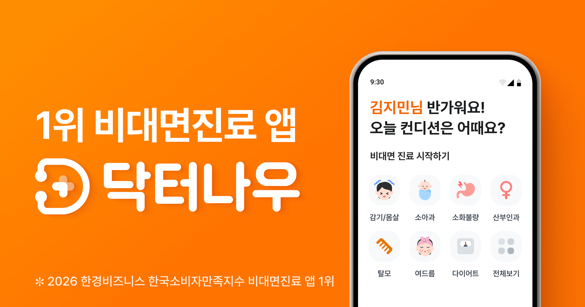

닥터나우 Doctornow
비대면 진료·처방약 배달 플랫폼
최종 업데이트

닥터나우는 어떤 브랜드인가
닥터나우는 2020년 설립돼 코로나19로 한시 허용된 비대면 진료 제도를 활용한 서비스를 시작했다. 환자가 앱으로 진료를 받고 처방약을 배달받을 수 있는 구조를 제공했다.
팬데믹 기간 이용자가 빠르게 늘며 투자 유치에도 성공했다. 이후 감염병 위기 단계 조정과 관련 규제 논의 속에서 서비스 범위를 여러 차례 조정해왔다.
닥터나우의 브랜드 아이덴티티는 무엇인가
한시적 규제 완화라는 외부 조건이 만든 시장 기회를 선점했지만, 그 조건이 다시 축소되면서 사업 모델 자체가 규제 정책에 종속되는 구조적 취약성을 드러낸 사례다. 규제 허용 범위 내에서 진료·처방·배달을 원스톱으로 연결하는 서비스 통합.
닥터나우 연혁 — 주요 사건은 언제였나
닥터나우 로고는 어떻게 변해왔나
자주 묻는 질문
닥터나우의 브랜드 아이덴티티는 무엇인가요?
한시적 규제 완화라는 외부 조건이 만든 시장 기회를 선점했지만, 그 조건이 다시 축소되면서 사업 모델 자체가 규제 정책에 종속되는 구조적 취약성을 드러낸 사례다.
출처와 검증
브랜드명은 한글과 원어를 함께 표기하되 데이터에 없는 표기는 만들지 않습니다. 기원 국가·설립연도는 검수된 정의문에서 확인된 값을 우선하고, 없을 때만 공식 웹사이트 URL이 일치하는 위키데이터 개체의 값을 씁니다.